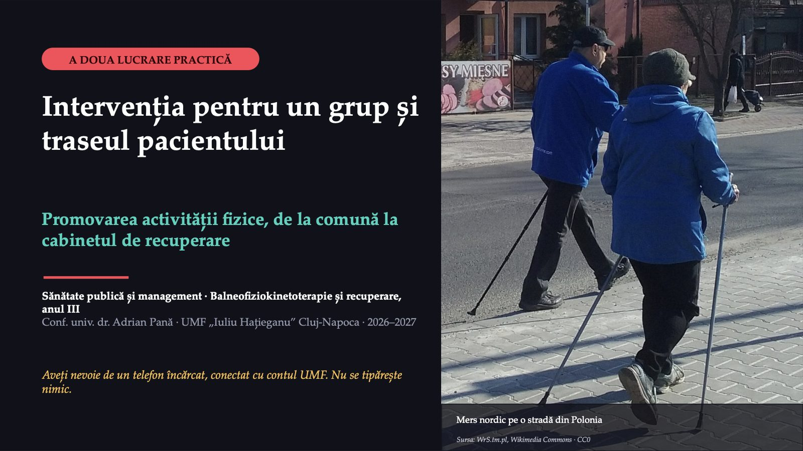
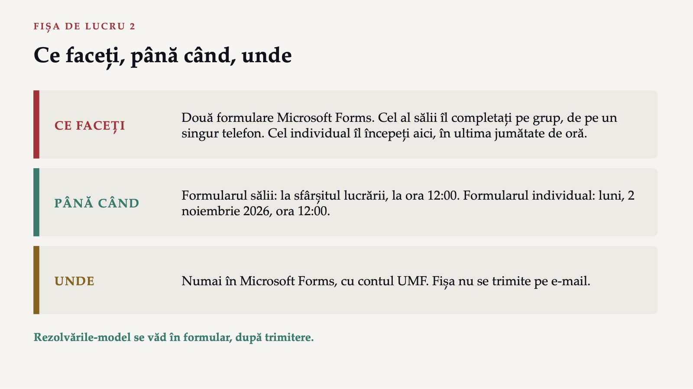
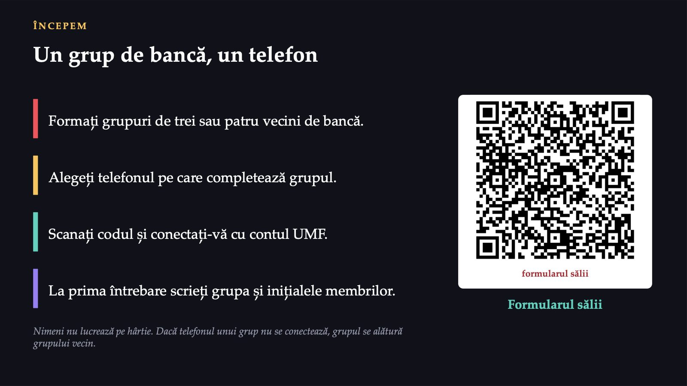
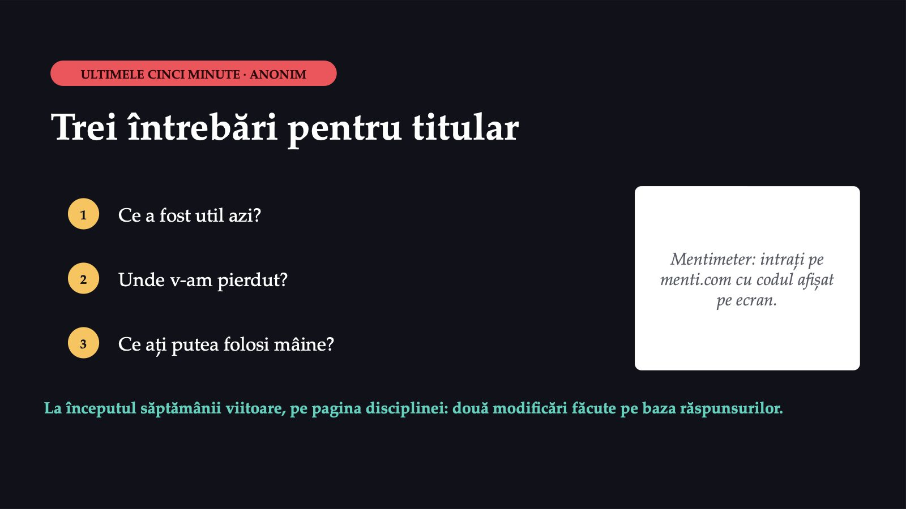

Intervenția pentru un grup și traseul pacientului

1 / 12Ce faceți, până când, unde

2 / 12Un grup de bancă, un telefon

3 / 12Vârstnicii unei comune
![Uliță dintr-un sat din Transilvania Sursa: Whitepixels, Wikimedia Commons · CC0 PARTEA I · CAZUL COMUNEI Vârstnicii unei comune Aproximativ trei mii de locuitori; în jur de șase sute au șaizeci și cinci de ani și peste. Mai mulți vârstnici au căzut în casă sau în curte; doi au fost operați pentru fractură de șold. Sala primăriei și sala de sport a școlii sunt libere; un fizioterapeut poate veni o dată pe săptămână. Caz construit în scop didactic; persoanele nu există. Ce pot face împreună medicul de familie, primarul și fizioterapeutul pentru toți vârstnicii comunei, nu numai pentru cei care au căzut deja?](diapozitive/LP02/004.jpg) 4 / 12
4 / 12Patru pași, unul după altul
![FORMULARUL SĂLII ANCHETA PE TELEFON Patru pași, unul după altul 1 Problema, cu o cifră Alegeți citarea corectă a cifrei despre vârstnici. 2 Recomandarea Alegeți recomandarea OMS potrivită vârstnicilor. 3 Obiectivul SMART Alegeți obiectivul care se poate verifica. 4 Indicatorul de rezultat Alegeți indicatorul care măsoară o schimbare. Cum merge: un pas se deschide numai după răspunsul corect. După un răspuns greșit, formularul arată un indiciu și vă întoarce la pas. După fiecare pas, distribuția răspunsurilor apare pe ecran și discutăm unde s-a greșit.](diapozitive/LP02/005.jpg) 5 / 12
5 / 12Răspunsul apare după ședință
Răspunsul apare după ședință
Scrieți intervenția, în cinci rubrici
![GRUP DE BANCĂ INTERVENȚIA GRUPULUI Scrieți intervenția, în cinci rubrici 1 Problema, cu o cifră citată complet: sursa, anul, grupul de vârstă, codul indicatorului. 2 Grupul-țintă: cine, aproximativ câți, cine îl poate influența. 3 Obiectivul SMART: ce se schimbă, la cine, cu cât, până când, cum se măsoară. 4 Două sau trei activități, potrivite recomandării OMS pentru grup. 5 Doi indicatori de rezultat, fiecare cu numărător, numitor și sursă. Alegerea grupului: păstrați comuna sau alegeți angajații cu activitate sedentară, de exemplu personalul administrativ al unui spital. Două confuzii frecvente: obiectivul formulat ca activitate; indicatorul de proces trecut ca indicator de rezultat. La final, două grupuri își citesc obiectivul, iar sala spune dacă este SMART.](diapozitive/LP02/007.jpg) 7 / 12
7 / 12Traseul pacientei A, în șase căsuțe
 8 / 12
8 / 12Răspunsul apare după ședință
Răspunsul apare după ședință
Formularul individual: traseul pacientului-ancoră
![A DOUA JUMĂTATE A LUCRĂRII Formularul individual: traseul pacientului-ancoră Alegeți pacientul-ancoră de la primul curs: A, B sau C. Completați cele șase căsuțe ale traseului și trei bariere de acces, fiecare cu o soluție concretă. Cadrul didactic trece printre dumneavoastră și verifică la fiecare pas sursa de finanțare și documentul de trecere. Formularul individual Îl începeți în sală și îl trimiteți cel târziu luni, 2 noiembrie 2026, ora 12:00. Cine îl termină în sală nu mai are nimic de lucrat acasă. formularul individual](diapozitive/LP02/010.jpg) 10 / 12
10 / 12Două distanțe, același domeniu
![Aparate de exerciții într-un parc Sursa: Rodhullandemu, Wikimedia Commons · CC BY-SA 4.0 SINTEZA Două distanțe, același domeniu Prima parte a privit un grup, vârstnicii unei comune, și o intervenție care se poate verifica. A doua a privit un pacient, cu documentele, plățile și opririle lui. Fizioterapeutul lucrează în ambele planuri. DE LUNI DIMINEAȚĂ Scrieți întâi obiectivul și indicatorul, apoi activitățile. La vârstnici, adăugați exerciții de echilibru și forță, cel puțin trei zile pe săptămână. Când un pacient nu vine, desenați-i traseul și căutați căsuța goală. Formularul individual: luni, 2 noiembrie 2026, ora 12:00.](diapozitive/LP02/011.jpg) 11 / 12
11 / 12Trei întrebări pentru titular

12 / 12Săgeți sau spațiu: navigare · O: vedere de ansamblu · N: notele prezentatorului · F: ecran complet · Esc: închidere